Předmět: Virtualizace 1 | Vypracoval: Maxmilián Babič
Cílem tohoto projektu bylo navrhnout a otestovat infrastrukturu založenou na dvou typech systémových kontejnerů – LXC/LXD a Docker – běžících na jednom hostitelském serveru s Ubuntu 24.04 LTS. Projekt zkoumá propustnost sítě mezi kontejnery ve dvou scénářích:
Součástí projektu jsou také testy výkonu CPU a paměti pomocí nástroje sysbench,
porovnání výkonu hostitelského systému a kontejneru, a popis možností škálování.
Celá infrastruktura běží na jednom hostitelském serveru. Kontejnery komunikují přes interní síťový bridge
lxdbr0 na IPv6 síti fd42:909c:d903:ecc7::/64.
http-server: Ubuntu 24.04, Apache 2.4.58, paměťový limit 1 GB. Servíruje soubory z NFS mountu (/var/www/html).nfs-server: Alpine Linux (itsthenetwork/nfs-server-alpine), exportuje adresář /nfs-share přes NFSv4.http-server: Stejný kontejner, ale soubory jsou uloženy lokálně bez NFS.lxdbr0.
Host má adresu fd42:909c:d903:ecc7::1, LXC kontejner fd42:909c:d903:ecc7:216:3eff:feee:7a19.
Docker NFS server naslouchá na portu 2049 hostu.
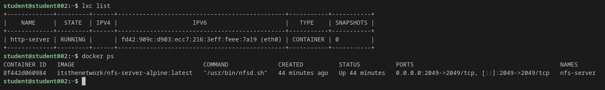
Výpis běžících kontejnerů – LXC (http-server) a Docker (nfs-server).
| Parametr | Hodnota |
|---|---|
| Hostitelský OS | Ubuntu 24.04.2 LTS (Noble Numbat) |
| Kernel | 6.8.0-100-generic |
| CPU | 2 vCPU |
| RAM (host) | 1463 MB celkem |
| Disk | 8.1 GB (LVM) |
| LXD verze | 5.21.4 LTS (snap) |
| Docker verze | 29.1.3 |
| LXC kontejner – limit paměti | 1 GB |
| LXC kontejner – využití paměti | ~174 MB (při provozu Apache) |
| Docker kontejner – využití paměti | ~28 MB (NFS server) |
sudo apt install -y docker.io sudo snap install lxd sudo lxd init --minimal
# Vytvoření kontejneru s paměťovým limitem 1 GB lxc launch ubuntu:24.04 http-server -c limits.memory=1GB # Instalace Apache uvnitř kontejneru lxc exec http-server -- bash -c "apt update && apt install -y apache2" # Povolení privilegovaného režimu pro NFS mount lxc config set http-server security.privileged true lxc config set http-server raw.apparmor "mount fstype=nfs*, mount fstype=rpc_pipefs," lxc restart http-server # Override systemd služby Apache lxc exec http-server -- bash -c "mkdir -p /etc/systemd/system/apache2.service.d && \ cat > /etc/systemd/system/apache2.service.d/override.conf << 'EOF' [Service] PrivateTmp=false ProtectSystem=false ProtectHome=false NoNewPrivileges=false EOF" lxc exec http-server -- systemctl daemon-reload lxc exec http-server -- systemctl start apache2
# Příprava sdíleného adresáře mkdir -p ~/nfs-data echo "Hello from NFS Docker container" > ~/nfs-data/index.html dd if=/dev/urandom of=~/nfs-data/testfile.bin bs=1M count=10 # Spuštění NFS kontejneru docker run -d --name nfs-server \ --privileged \ -v ~/nfs-data:/nfs-share \ -e SHARED_DIRECTORY=/nfs-share \ -e PERMITTED="*" \ -p 2049:2049 \ itsthenetwork/nfs-server-alpine:latest
# Instalace NFS klienta lxc exec http-server -- apt install -y nfs-common # Mount NFS share přes IPv6 lxc exec http-server -- mount -t nfs4 -o nolock,vers=4.0 \ [fd42:909c:d903:ecc7::1]:/ /var/www/html # Ověření curl -6 http://[fd42:909c:d903:ecc7:216:3eff:feee:7a19]/ # Výstup: Hello from NFS Docker container
Měření propustnosti síťového spojení mezi hostitelským systémem a LXC kontejnerem
přes interní bridge lxdbr0.
# Server v kontejneru lxc exec http-server -- iperf3 -s -D # Klient na hostu iperf3 -c fd42:909c:d903:ecc7:216:3eff:feee:7a19 -t 10
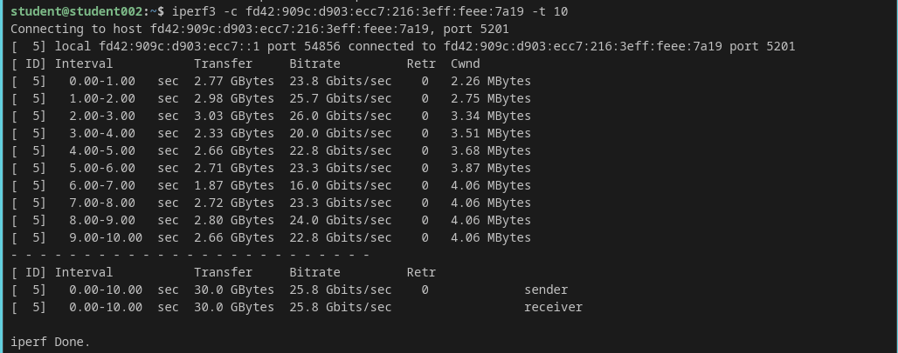
Výstup testu propustnosti iperf3 – průměrná propustnost 25.8 Gbits/sec.
| Metrika | Hodnota |
|---|---|
| Průměrná propustnost | 25.8 Gbits/sec |
| Celkový přenos (10s) | 30.0 GBytes |
| Retransmise | 0 |
Porovnání výkonu HTTP serveru při servírování 10 MB souboru ve dvou scénářích: soubory na vzdáleném NFS úložišti vs. lokální úložiště.
# Test (100 požadavků, 10 souběžně) ab -n 100 -c 10 http://[fd42:909c:d903:ecc7:216:3eff:feee:7a19]/testfile.bin
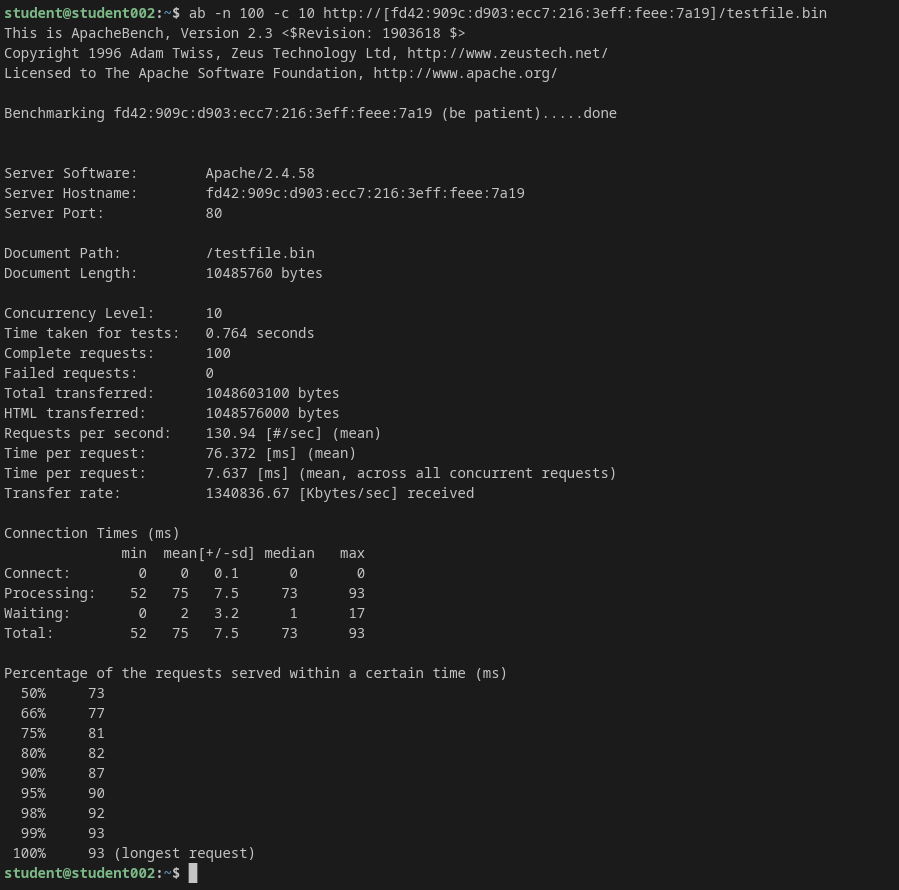
Scénář A – HTTP benchmark se soubory na NFS úložišti.
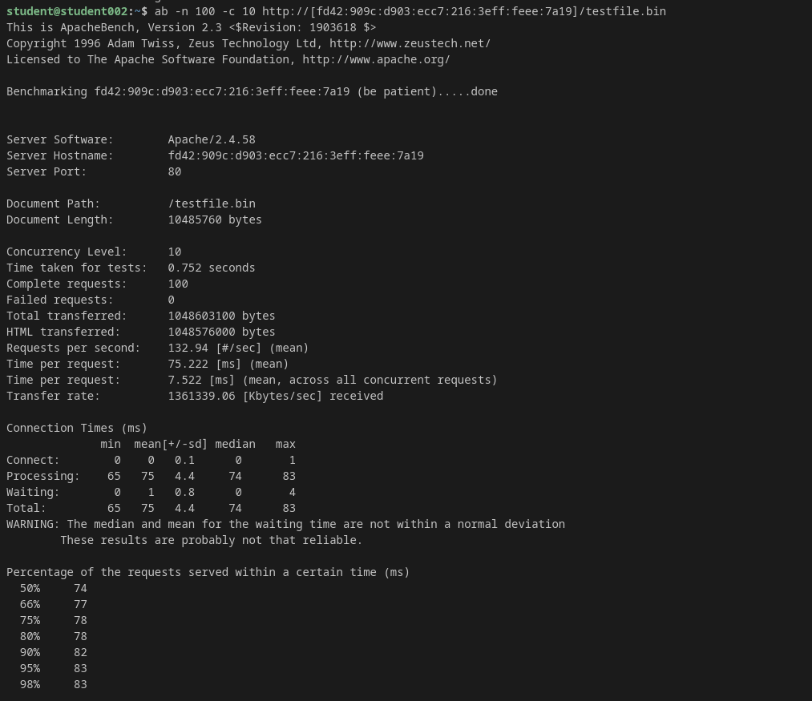
Scénář B – HTTP benchmark se soubory na lokálním úložišti.
| Metrika | Scénář A – NFS | Scénář B – Lokální |
|---|---|---|
| Požadavky za sekundu | 130.94 req/s | 132.94 req/s |
| Přenosová rychlost | 1,340,837 KB/s | 1,361,339 KB/s |
| Průměrný čas požadavku | 76.4 ms | 75.2 ms |
| Medián (50 %) | 73 ms | 74 ms |
| Nejdelší požadavek | 93 ms | 83 ms |
| Neúspěšné požadavky | 0 | 0 |
# CPU test (2 vlákna, prime 10000) sysbench cpu --threads=2 run # CPU test (2 vlákna, prime 20000) sysbench --test=cpu --cpu-max-prime=20000 --num-threads=2 run
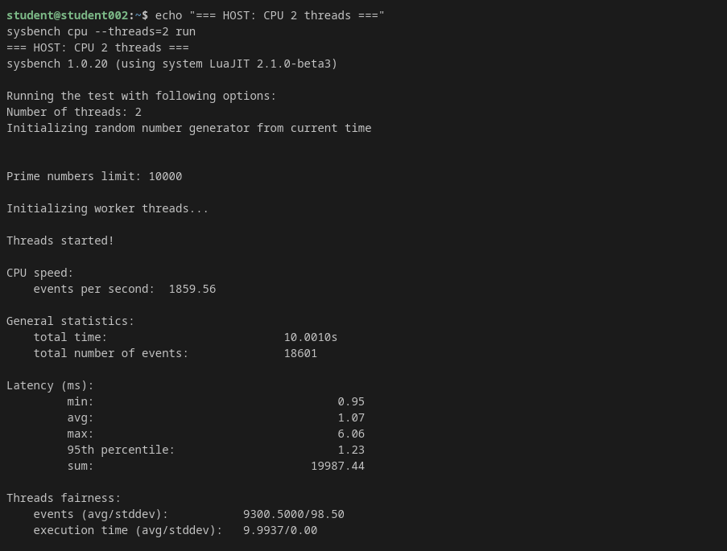
Host – CPU test (prime 10000, 2 vlákna): 1859.56 events/s.
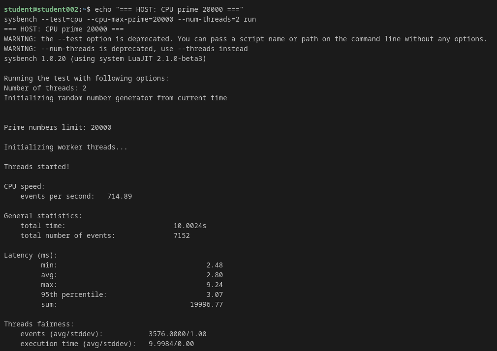
Host – CPU test (prime 20000, 2 vlákna): 714.89 events/s.
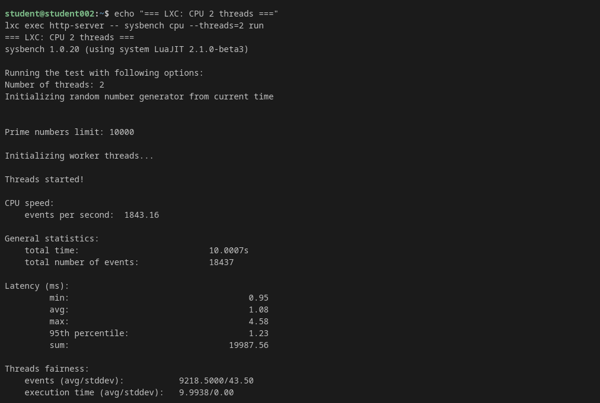
LXC kontejner – CPU test (prime 10000, 2 vlákna): 1843.16 events/s.
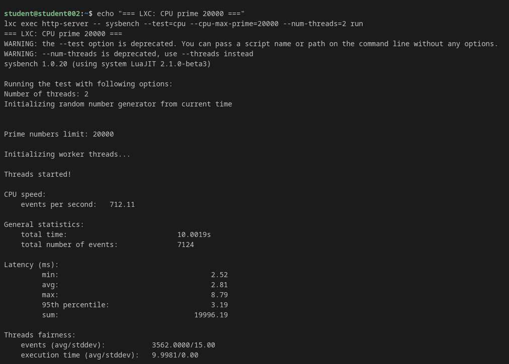
LXC kontejner – CPU test (prime 20000, 2 vlákna): 712.11 events/s.
| Test | Host | LXC kontejner | Rozdíl |
|---|---|---|---|
| CPU events/s (prime 10000) | 1859.56 | 1843.16 | −0.9 % |
| CPU events/s (prime 20000) | 714.89 | 712.11 | −0.4 % |
| Latence avg (prime 10000) | 1.07 ms | 1.08 ms | +0.9 % |
| Latence avg (prime 20000) | 2.80 ms | 2.81 ms | +0.4 % |
# Paměťový test (1M bloky, 100 GB celkem) sysbench --test=memory --memory-block-size=1M --memory-total-size=100G --num-threads=1 run # Paměťový test (1K bloky, 100 GB celkem) sysbench --test=memory --memory-block-size=1K --memory-total-size=100G --num-threads=1 run # Paměťový test (4 vlákna) sysbench --test=memory --num-threads=4 run
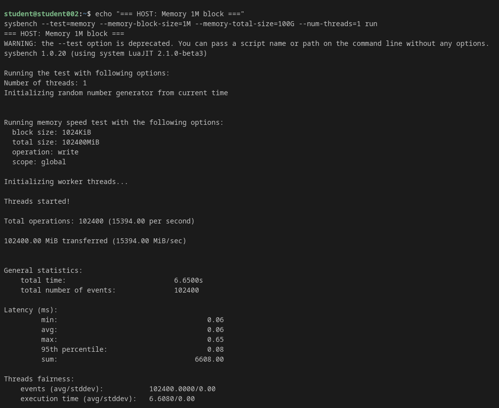
Host – paměťový test (1M bloky): 15,394 MiB/s.
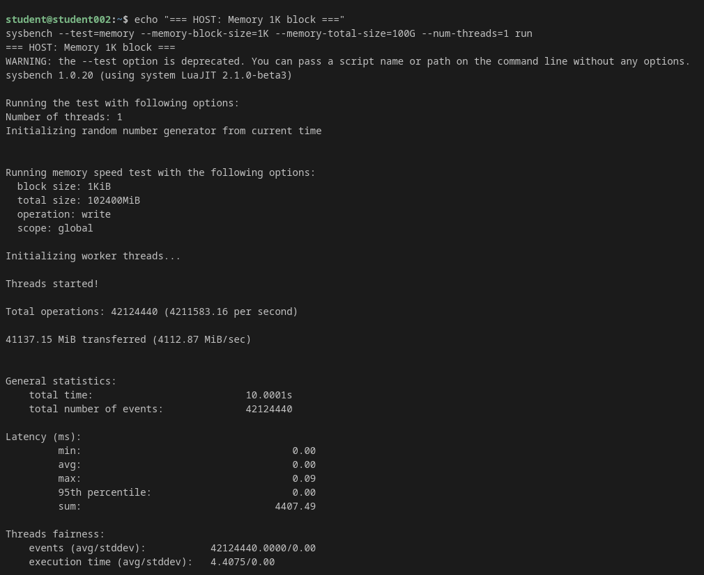
Host – paměťový test (1K bloky): 4,113 MiB/s.
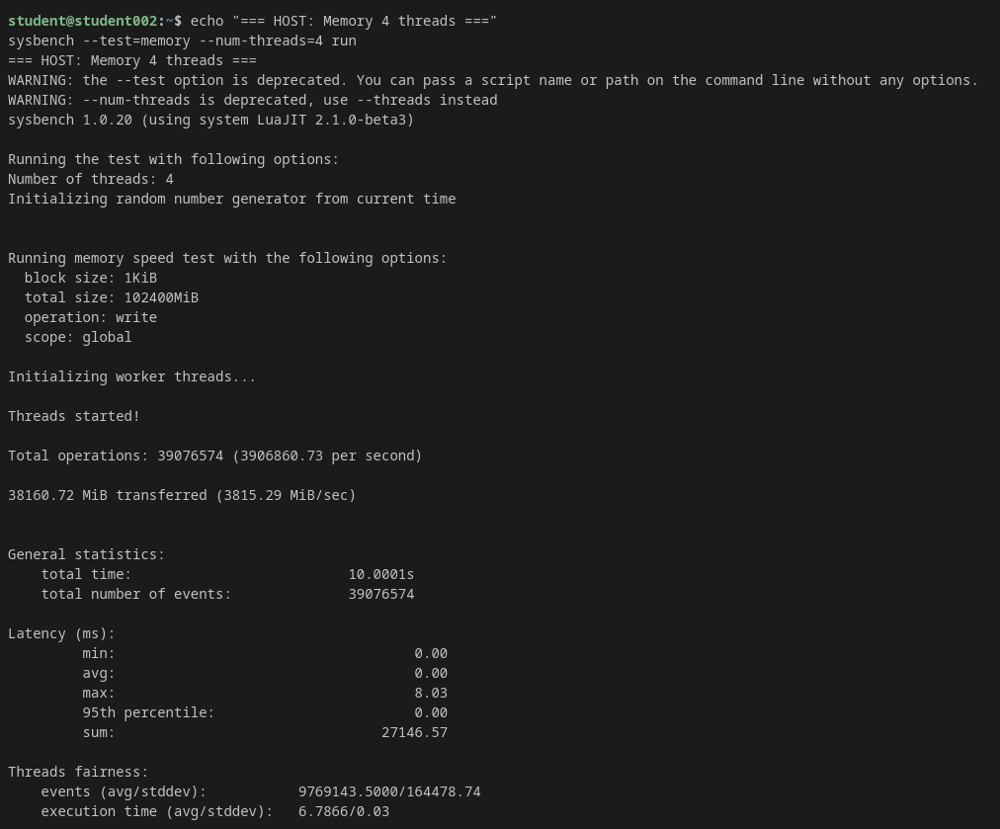
Host – paměťový test (4 vlákna): 3,815 MiB/s.
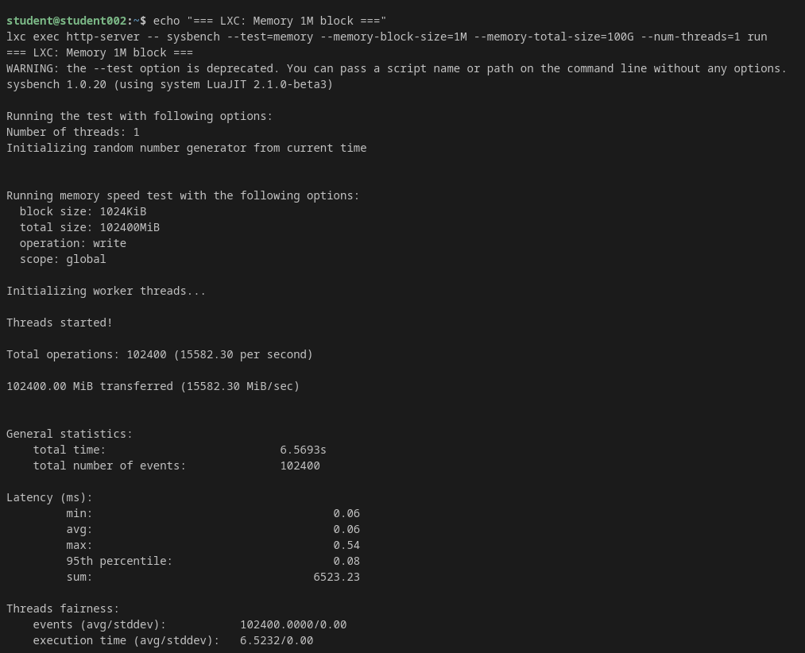
LXC kontejner – paměťový test (1M bloky): 15,582 MiB/s.
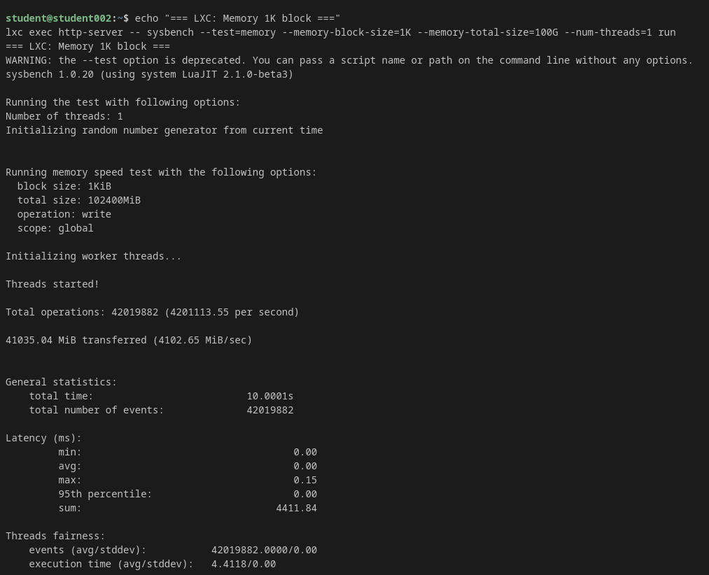
LXC kontejner – paměťový test (1K bloky): 4,103 MiB/s.
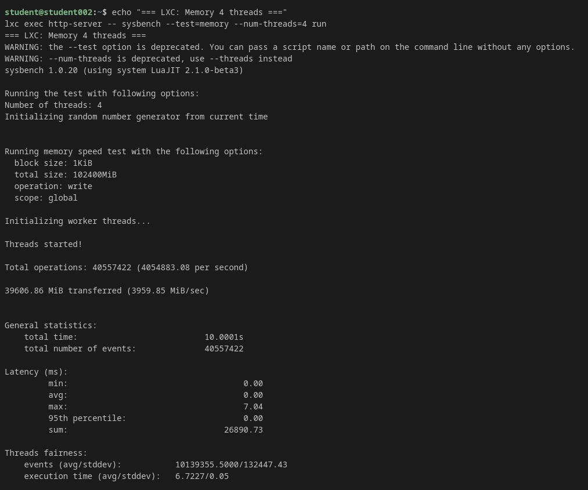
LXC kontejner – paměťový test (4 vlákna): 3,960 MiB/s.
| Test | Host | LXC kontejner | Rozdíl |
|---|---|---|---|
| Memory 1M blok (MiB/s) | 15,394 | 15,582 | +1.2 % |
| Memory 1K blok (MiB/s) | 4,113 | 4,103 | −0.2 % |
| Memory 4 vlákna (MiB/s) | 3,815 | 3,960 | +3.8 % |
Dle zadání byl LXC kontejner omezen na maximálně 1 GB paměti.
# Nastavený limit lxc config get http-server limits.memory # 1GB # Využití paměti v kontejneru lxc exec http-server -- free -m # total 953, used 30 # Využití dle LXD lxc info http-server | grep -i memory # 174.27MiB # Docker kontejner docker stats nfs-server --no-stream # 27.87MiB
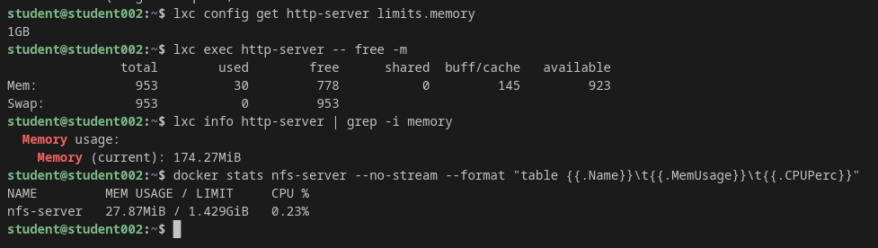
Sledování využití paměti – LXC kontejner (limit 1 GB, využití 174 MB) a Docker NFS server (28 MB).
| Kontejner | Limit | Aktuální využití |
|---|---|---|
| LXC http-server | 1 GB | 174 MB |
| Docker nfs-server | bez limitu (host max) | 28 MB |
LXD umožňuje dynamicky měnit přidělené prostředky za běhu kontejneru:
# Změna limitu paměti lxc config set http-server limits.memory 2GB # Omezení počtu CPU jader lxc config set http-server limits.cpu 4 # CPU priorita lxc config set http-server limits.cpu.priority 10
Docker podporuje dynamický update prostředků:
# Omezení paměti docker update --memory 1g --memory-swap 1g nfs-server # Omezení CPU docker update --cpus 2 nfs-server
Pro zvýšení propustnosti v produkčním prostředí je možné nasadit více instancí HTTP serveru za load balancer a sdílet NFS úložiště. Docker Compose nebo Kubernetes umožňují automatické škálování počtu replik služby na základě zátěže.
Projekt úspěšně demonstroval propojení dvou typů systémových kontejnerů (LXC/LXD a Docker) s využitím síťového protokolu NFS pro sdílení souborů. Hlavní zjištění: